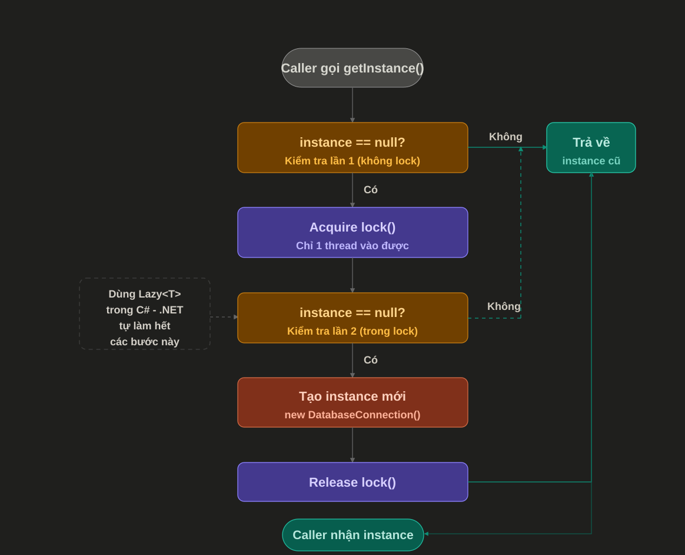

Singleton Pattern¶
1. Singleton Pattern là gì?¶
Singleton Pattern là một Creational Design Pattern dùng để đảm bảo một class chỉ có duy nhất một instance trong toàn bộ ứng dụng, đồng thời cung cấp một điểm truy cập chung để lấy instance đó.
Nói đơn giản:
Một class -> chỉ tạo một object duy nhất -> dùng lại ở nhiều nơi
Ví dụ thực tế:
- App configuration
- Logger
- Cache dùng chung
- Service quản lý kết nối tới tài nguyên dùng chung
- Object chứa trạng thái toàn cục có kiểm soát
2. Singleton giải quyết vấn đề gì?¶
Trong ứng dụng, có một số object không nên được tạo đi tạo lại nhiều lần vì:
- Tốn tài nguyên
- Dễ làm sai lệch trạng thái
- Cần một nơi quản lý tập trung
- Cần chia sẻ cùng một cấu hình hoặc dữ liệu giữa nhiều module
Ví dụ:
Nếu mỗi service tự tạo một AppSettings riêng, khi cấu hình thay đổi hoặc dữ liệu không đồng bộ, hệ thống có thể chạy không nhất quán.
Singleton giúp gom object đó về một instance dùng chung:
Controller A ----\
Service B --------> Singleton Instance
Worker C --------/
3. Đặc điểm chính¶
Một Singleton thường có các đặc điểm:
- Constructor là
privateđể bên ngoài không tựnewđược. - Có một biến static giữ instance duy nhất.
- Có một property hoặc method static để truy cập instance.
- Instance thường được tạo một lần rồi dùng lại.
4. Ví dụ Singleton cơ bản trong C¶
public sealed class AppConfig
{
private static readonly AppConfig _instance = new AppConfig();
public static AppConfig Instance => _instance;
public string ApplicationName { get; private set; }
private AppConfig()
{
ApplicationName = "Digital Docs";
}
}
Cách sử dụng:
var appName = AppConfig.Instance.ApplicationName;
Console.WriteLine(appName);
Giải thích:
private AppConfig()ngăn code bên ngoài tạo object bằngnew AppConfig()._instancelà object duy nhất của class.Instancelà điểm truy cập chung.sealedngăn class bị kế thừa, tránh phá vỡ ý nghĩa Singleton.
5. Lazy Singleton¶
Lazy Singleton chỉ tạo instance khi lần đầu tiên được sử dụng.
public sealed class DatabaseConnectionManager
{
private static readonly Lazy<DatabaseConnectionManager> _instance =
new Lazy<DatabaseConnectionManager>(() => new DatabaseConnectionManager());
public static DatabaseConnectionManager Instance => _instance.Value;
private DatabaseConnectionManager()
{
}
public void Connect()
{
Console.WriteLine("Connected to database");
}
}
Cách dùng:
DatabaseConnectionManager.Instance.Connect();
Ưu điểm:
- Chỉ khởi tạo khi thật sự cần.
Lazy<T>trong .NET mặc định hỗ trợ thread-safe.- Phù hợp với object tạo tốn tài nguyên.
6. Singleton trong ASP.NET Core¶
Trong ASP.NET Core, mình thường không tự viết Singleton thủ công. Thay vào đó, dùng Dependency Injection container.
Ví dụ đăng ký service dạng Singleton:
builder.Services.AddSingleton<ICacheService, MemoryCacheService>();
Service:
public interface ICacheService
{
string? Get(string key);
void Set(string key, string value);
}
public class MemoryCacheService : ICacheService
{
private readonly Dictionary<string, string> _cache = new();
public string? Get(string key)
{
return _cache.TryGetValue(key, out var value) ? value : null;
}
public void Set(string key, string value)
{
_cache[key] = value;
}
}
Khi dùng AddSingleton, ASP.NET Core sẽ:
- Tạo một instance duy nhất của
MemoryCacheService. - Dùng lại instance đó ở mọi nơi cần
ICacheService. - Quản lý vòng đời object thay mình.
Ví dụ inject vào service khác:
public class ProductService
{
private readonly ICacheService _cacheService;
public ProductService(ICacheService cacheService)
{
_cacheService = cacheService;
}
}
Trong thực tế với .NET, đây là cách nên ưu tiên hơn Singleton tự viết.
7. Khi nào nên dùng Singleton?¶
Nên dùng Singleton khi object:
- Thật sự chỉ cần một instance trong toàn bộ app.
- Không chứa state thay đổi theo từng user/request.
- Tạo object tốn tài nguyên và có thể tái sử dụng.
- Đóng vai trò quản lý tài nguyên dùng chung.
- Cần được chia sẻ nhất quán giữa nhiều module.
Ví dụ phù hợp:
| Trường hợp | Có nên dùng Singleton? | Ghi chú |
|---|---|---|
| Logger | Có | Thường dùng chung toàn app |
| App settings | Có | Nên dùng IOptions<T> trong ASP.NET Core |
| Memory cache | Có | Cần chú ý thread-safe |
| Database connection object trực tiếp | Thường không | Nên dùng connection pool hoặc DbContext theo scope |
| Service chứa thông tin user hiện tại | Không | Mỗi request/user khác nhau |
| Repository dùng EF DbContext | Không | DbContext thường là scoped |
8. Khi nào không nên dùng Singleton?¶
Không nên dùng Singleton chỉ vì muốn "gọi cho tiện".
Tránh dùng Singleton khi:
- Object chứa dữ liệu thay đổi theo request.
- Object phụ thuộc vào user hiện tại.
- Object cần test dễ bằng mock.
- Object giữ mutable state phức tạp.
- Object cần được tạo/hủy theo vòng đời cụ thể.
- Bạn chỉ muốn tránh truyền dependency qua constructor.
Ví dụ không nên:
public sealed class CurrentUser
{
public static CurrentUser Instance { get; } = new CurrentUser();
public int UserId { get; set; }
private CurrentUser()
{
}
}
Vấn đề:
- User A có thể ghi đè dữ liệu của User B.
- Không an toàn trong môi trường nhiều request.
- Rất dễ phát sinh bug khó tìm.
9. Singleton và Thread Safety¶
Trong app nhiều thread, Singleton cần được tạo và sử dụng cẩn thận.
Sơ đồ dưới đây mô tả luồng thường gặp của cách tạo Singleton an toàn bằng cơ chế kiểm tra hai lần và lock:

Ý nghĩa của sơ đồ:
- Caller gọi
getInstance()hoặc truy cậpInstance. - Hệ thống kiểm tra lần 1: nếu
_instanceđã có rồi thì trả về ngay, không cần lock. - Nếu
_instance == null, thread đi vào vùnglock. - Bên trong
lock, hệ thống kiểm tra lần 2 để chắc chắn chưa có thread khác tạo instance trong lúc thread hiện tại đang chờ lock. - Nếu vẫn
null, instance mới được tạo. - Sau khi tạo xong, lock được release và caller nhận instance.
- Những lần gọi sau sẽ đi theo nhánh "Không" ở lần kiểm tra đầu tiên và trả về instance cũ rất nhanh.
Điểm quan trọng là lần kiểm tra thứ hai không bị thừa. Nó giúp tránh tình huống nhiều thread cùng vượt qua lần kiểm tra đầu tiên khi _instance đang là null, rồi lần lượt vào lock và tạo nhiều instance khác nhau.
Ví dụ có vấn đề:
public sealed class BadSingleton
{
private static BadSingleton? _instance;
public static BadSingleton Instance
{
get
{
if (_instance == null)
{
_instance = new BadSingleton();
}
return _instance;
}
}
private BadSingleton()
{
}
}
Vấn đề:
- Nếu nhiều thread cùng gọi
Instancelần đầu, có thể tạo nhiều object. - Không an toàn trong môi trường web/app concurrent.
Cách tốt hơn:
public sealed class DoubleCheckSingleton
{
private static readonly object _lock = new();
private static DoubleCheckSingleton? _instance;
public static DoubleCheckSingleton Instance
{
get
{
if (_instance == null)
{
lock (_lock)
{
if (_instance == null)
{
_instance = new DoubleCheckSingleton();
}
}
}
return _instance;
}
}
private DoubleCheckSingleton()
{
}
}
Tuy nhiên trong C# hiện đại, mình thường không cần tự viết đầy đủ như trên. Dùng Lazy<T> sẽ gọn và ít lỗi hơn:
public sealed class GoodSingleton
{
private static readonly Lazy<GoodSingleton> _instance =
new Lazy<GoodSingleton>(() => new GoodSingleton());
public static GoodSingleton Instance => _instance.Value;
private GoodSingleton()
{
}
}
10. Singleton khác gì Static Class?¶
Singleton và static class đều có thể được truy cập toàn cục, nhưng không giống nhau.
| Tiêu chí | Singleton | Static Class |
|---|---|---|
| Có instance | Có | Không |
| Implement interface | Có thể | Không |
| Inject qua DI | Có thể | Không trực tiếp |
| Mock khi test | Dễ hơn nếu dùng interface/DI | Khó hơn |
| Có state | Có thể có | Có thể có nhưng nên hạn chế |
| Kế thừa | Không nên, thường dùng sealed |
Không |
Nên dùng static class cho helper thuần không có state:
public static class StringHelper
{
public static bool IsEmpty(string? value)
{
return string.IsNullOrWhiteSpace(value);
}
}
Nên dùng Singleton/DI Singleton cho service có hành vi, có dependency hoặc cần mock khi test.
11. Ưu điểm¶
- Đảm bảo chỉ có một instance.
- Tiết kiệm tài nguyên với object nặng.
- Có điểm truy cập thống nhất.
- Phù hợp với service dùng chung toàn ứng dụng.
- Khi dùng qua DI, dễ quản lý vòng đời hơn.
12. Nhược điểm¶
- Dễ bị lạm dụng thành global state.
- Có thể làm code khó test nếu gọi trực tiếp
Singleton.Instance. - Có thể gây bug trong môi trường nhiều thread nếu không thread-safe.
- Làm dependency bị ẩn, khó nhìn ra class đang phụ thuộc vào gì.
- Nếu chứa mutable state, dễ gây lỗi khó debug.
13. Lưu ý khi sử dụng¶
Checklist trước khi dùng Singleton:
1. Object này có thật sự chỉ cần một instance không?
2. Object này có chứa dữ liệu theo user/request không?
3. Object này có cần thread-safe không?
4. Object này có dễ test không?
5. Có thể dùng Dependency Injection thay vì Singleton thủ công không?
6. State bên trong object có bị thay đổi bởi nhiều nơi không?
Một số nguyên tắc thực tế:
- Trong ASP.NET Core, ưu tiên
AddSingletonthay vì tự viếtInstance. - Không inject service
Scopedvào serviceSingleton. - Không lưu thông tin user hiện tại trong Singleton.
- Nếu Singleton có collection dùng chung, cần dùng collection thread-safe hoặc lock hợp lý.
- Không dùng Singleton để che giấu dependency.
- Không biến Singleton thành nơi chứa mọi thứ.
14. Ví dụ thực tế: Logger đơn giản¶
public interface IAppLogger
{
void Info(string message);
void Error(string message, Exception exception);
}
public class ConsoleAppLogger : IAppLogger
{
public void Info(string message)
{
Console.WriteLine($"[INFO] {message}");
}
public void Error(string message, Exception exception)
{
Console.WriteLine($"[ERROR] {message}");
Console.WriteLine(exception);
}
}
Đăng ký DI:
builder.Services.AddSingleton<IAppLogger, ConsoleAppLogger>();
Sử dụng:
public class OrderService
{
private readonly IAppLogger _logger;
public OrderService(IAppLogger logger)
{
_logger = logger;
}
public void CreateOrder()
{
_logger.Info("Creating order");
}
}
Điểm hay:
OrderServicekhông biết logger được tạo như thế nào.- Có thể thay
ConsoleAppLoggerbằngFileLogger. - Dễ mock
IAppLoggerkhi unit test. - Vẫn đảm bảo logger chỉ có một instance nếu đăng ký
AddSingleton.
15. Ví dụ sai thường gặp¶
public sealed class ServiceLocator
{
public static ServiceLocator Instance { get; } = new ServiceLocator();
public EmailService EmailService { get; } = new EmailService();
public OrderService OrderService { get; } = new OrderService();
public PaymentService PaymentService { get; } = new PaymentService();
private ServiceLocator()
{
}
}
Vấn đề:
- Class này ôm quá nhiều trách nhiệm.
- Dependency bị ẩn.
- Khó test.
- Khó thay implementation.
- Dễ biến thành "global container" tự chế.
Cách tốt hơn là dùng DI container của framework.
16. Tóm tắt¶
Singleton Pattern dùng để đảm bảo một class chỉ có một instance duy nhất trong toàn bộ ứng dụng.
Nên nhớ:
- Singleton phù hợp với object dùng chung và không phụ thuộc request/user.
- Trong .NET, ưu tiên dùng Dependency Injection với
AddSingleton. - Cẩn thận với thread safety và mutable state.
- Không dùng Singleton chỉ để gọi code cho tiện.
- Nếu lạm dụng, Singleton có thể làm code khó test và khó bảo trì.
Một câu dễ nhớ:
Singleton tốt khi cần một instance dùng chung thật sự.
Singleton xấu khi nó trở thành biến global trá hình.